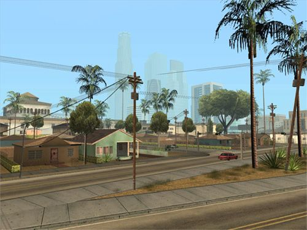

Grand Theft Auto: San Andreas es un videojuego de acción y aventura desarrollado por Rockstar North y publicado por Rockstar Games. Fue lanzado en 2004 para PlayStation 2, y posteriormente para otras plataformas como Xbox y PC. El juego es la séptima entrega principal de la serie Grand Theft Auto y se ambienta en el estado ficticio de San Andreas, que está inspirado en California y Nevada.


Requisitos del sistema: Sistema operativo: Windows 2000/XP Procesador: 1 GHz Pentium III o AMD Athlon Memoria: 256 MB de RAM Tarjeta gráfica: 64 MB (GeForce 3 o superior) Espacio en disco: 3,6 GB de espacio libre